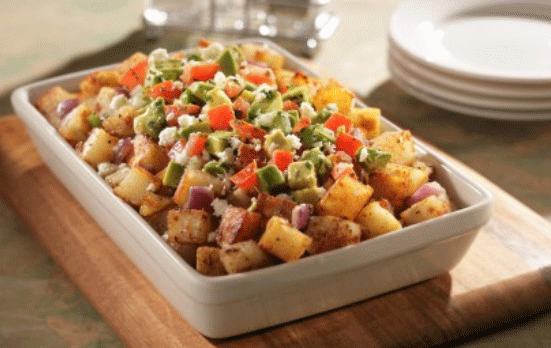
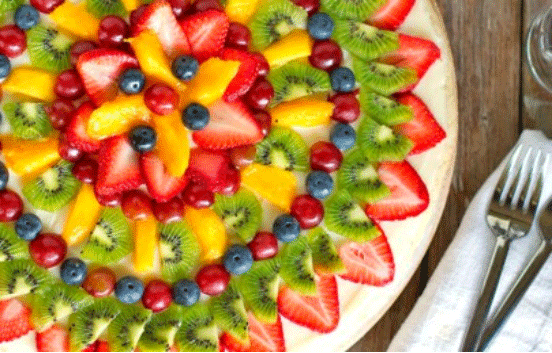
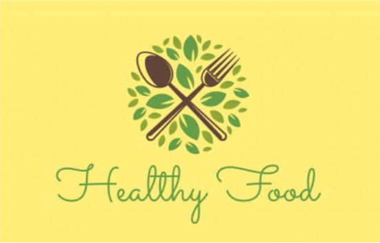

Healthy Farm
Welcome to our healthy farm!

best quality products
“We eliminated any possible pollution in our soils in order to deliver the purest organic produce to our customers’ tables.“
about us
“Currently, the European Union and the US require producers to obtain special certification to market food as organic.“

what is organic?
“Currently, the European Union and the US require producers to obtain special certification to market food as organic.“
featured SALE
“Enjoy seasonal deals, coupons, recipes and tips from The Healthy Farm value guide.“
the health farm dealfeatured RECIPE
“These lightly spiced pillowy potato dumplings made with sweet potatoes are great with pesto or roasted veggies.“
sweet potato gnocchiorganic FRUIT
“Enjoy seasonal deals, coupons, recipes and tips from The Healthy Farm value guide.“
the health farm dealgift CARDS
“These lightly spiced pillowy potato dumplings made with sweet potatoes are great with pesto or roasted veggies.“
sweet potato gnocchi